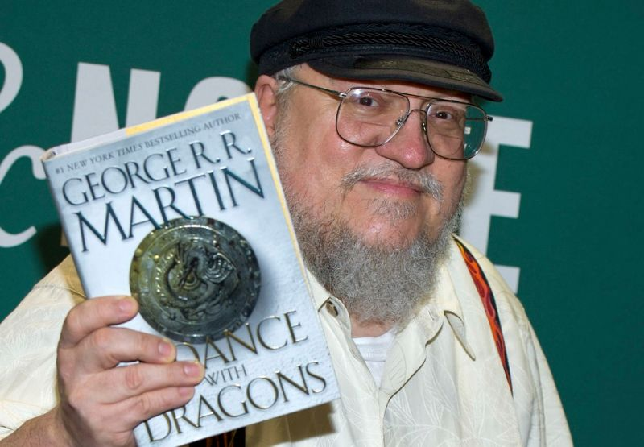
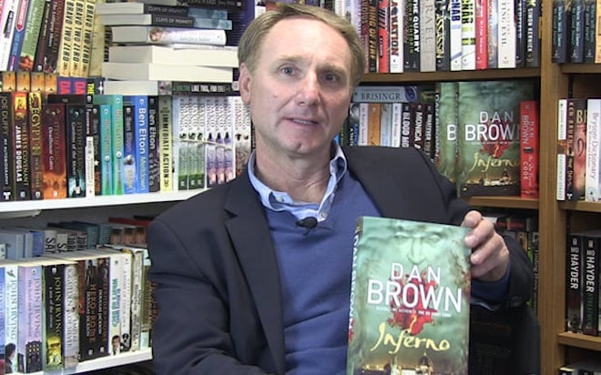

Club de Lectura Universidad Pablo de Olavide
Autores
George R.R. Martin confirma que los libros de Juego de Tronos no seguirán la historia de la serie

Fig.1 - George R.R. Martin.
Dan Browb: El código Davinci se me ocurrió en Sevilla.

Fig.2 - Dan Brown.